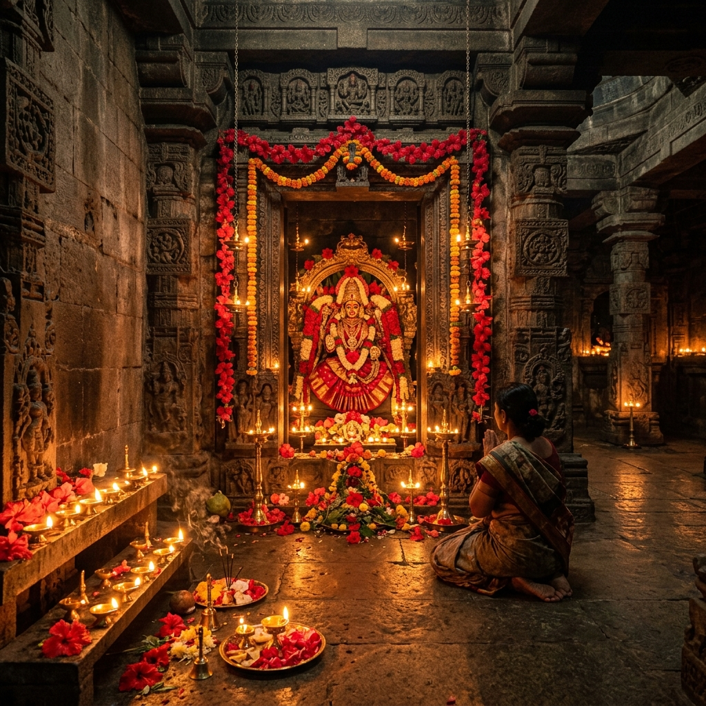
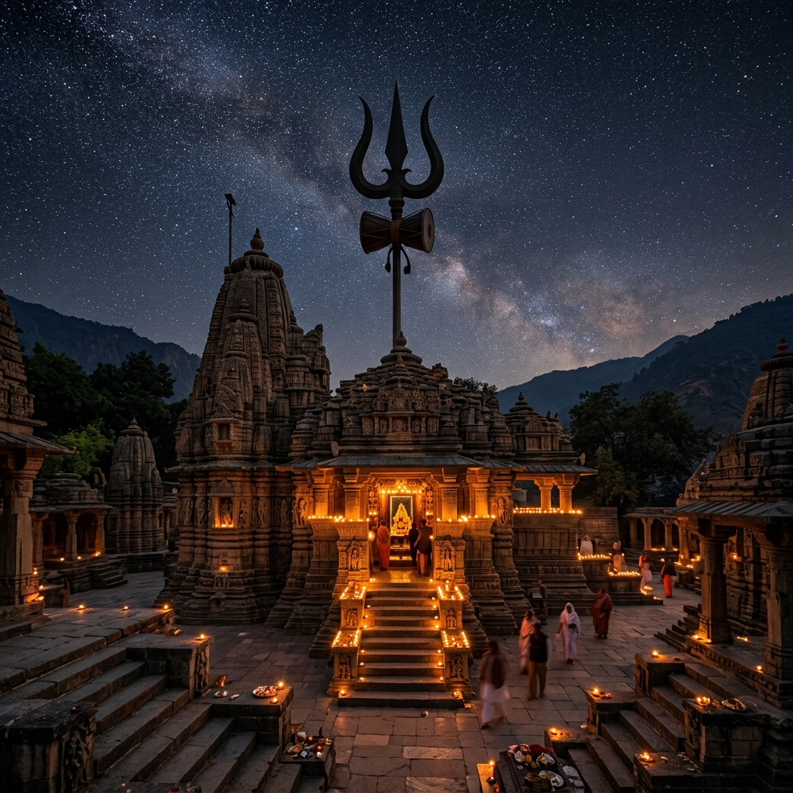
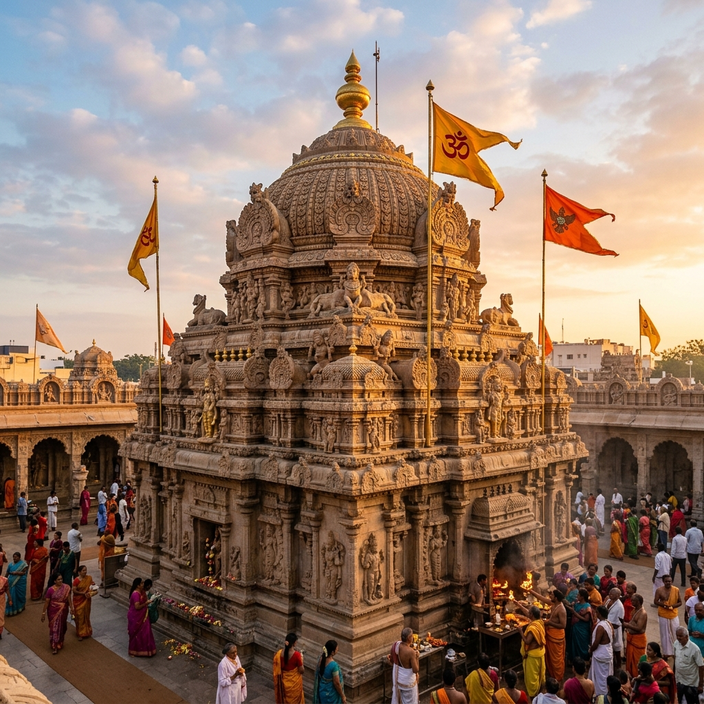
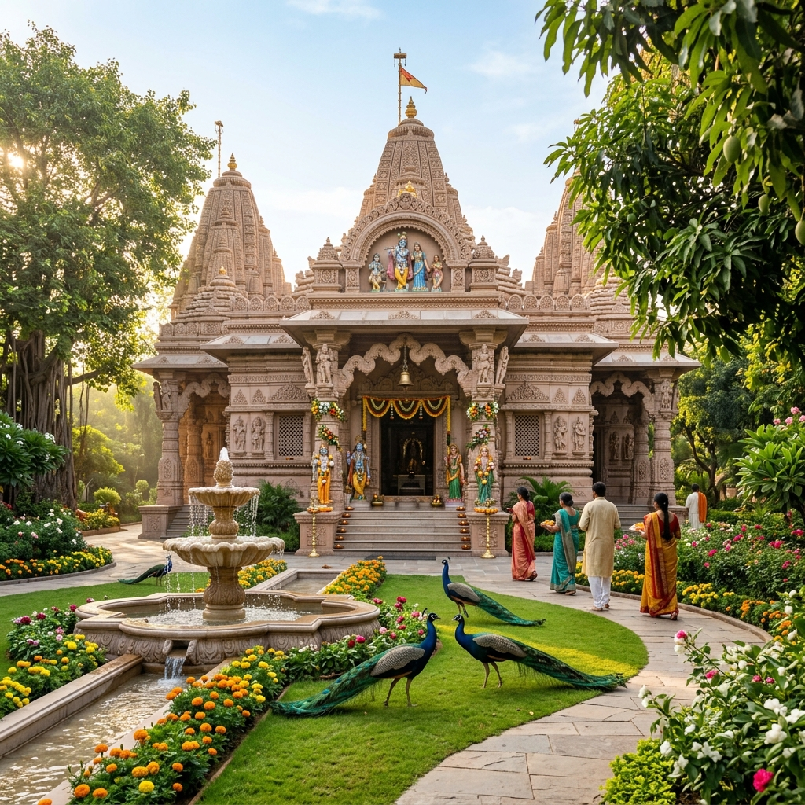

Famous Temples of Tamil Nadu

Meenakshi Amman Temple
Dedicated to Goddess Parvati in the form of Meenakshi and her consort, Lord Shiva in the form of Sundareswarar. The Meenakshi Amman Temple is one of the most ancient and renowned architectural wonders in Tamil Nadu.
Plan Visit
Adi Kumbeswarar Temple
The grandeur of the Chola dynasty endures in the divine Adi Kumbeswarar Temple, a stunning example of Dravidian architecture, renovated during the 16th century AD.
Plan VisitBrihadeeswarar Temple
The Brihadeeswarar Temple, a magnificent abode of Lord Shiva in Thanjavur, stands as one of India's largest temples and a UNESCO World Heritage Site.
Plan Visit
Sri Ranganathaswamy Temple
The Ranganathaswamy Temple, dedicated to Lord Vishnu, is a Dravidian architectural marvel located on Srirangam Island in Tiruchirappalli, Tamil Nadu.
Plan Visit
Sri Rajagopala Swamy Temple
The divine temple of Rajagopala Swamy in Mannargudi, also known as Guruvayoor, stands as a revered shrine dedicated to Lord Krishna.
Plan VisitRamanathaswamy Temple
The Ramanathaswamy Temple, nestled on the tranquil island of Rameswaram, holds immense significance as one of the four primary pilgrimage destinations for Hindus worldwide.
Plan Visit